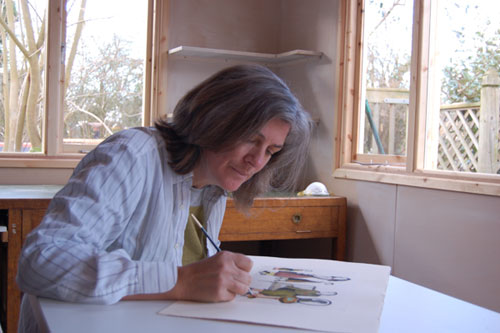
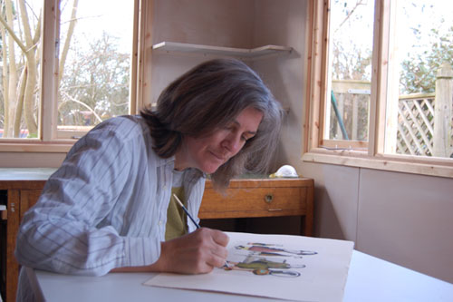

Clare Bassett
Our lives are full of moments of uncertainy or comprehension, of indecision or satisfaction, of patience or frustration, but we quickly move on. I like to pause and capture some of those points in time, which we pass by so swiftly. Just by looking, we are exposed.
I look at the familiar with an unsettling glance, as well as a touch of humour. My figures are not knowing people, assured in their place. For them the world is often a bit of a puzzle. Sometimes their world spirals into the dreamlike and surreal. Things are not always as we think.
I invite the viewer to become part of the moment and to question assumptions. Become part of the story and to observe or identify.
I explore the physicality, as well as the situation, of these people. By their very solidity, they are rooted to the spot. Possibly through choice, possibly through the inabilty to act. In the lithographs working on a piece of stone adds to the monumental nature of the figures. There is a sense of carving the images in two dimensions.
I hope that these pieces manage to stay fresh to the eye, as the discussion between the picture and the viewer continues over time, with new stories and new voices emerging.

I look at the familiar with an unsettling glance, as well as a touch of humour. My figures are not knowing people, assured in their place. For them the world is often a bit of a puzzle. Sometimes their world spirals into the dreamlike and surreal. Things are not always as we think.
I invite the viewer to become part of the moment and to question assumptions. Become part of the story and to observe or identify.
I explore the physicality, as well as the situation, of these people. By their very solidity, they are rooted to the spot. Possibly through choice, possibly through the inabilty to act. In the lithographs working on a piece of stone adds to the monumental nature of the figures. There is a sense of carving the images in two dimensions.
I hope that these pieces manage to stay fresh to the eye, as the discussion between the picture and the viewer continues over time, with new stories and new voices emerging.
